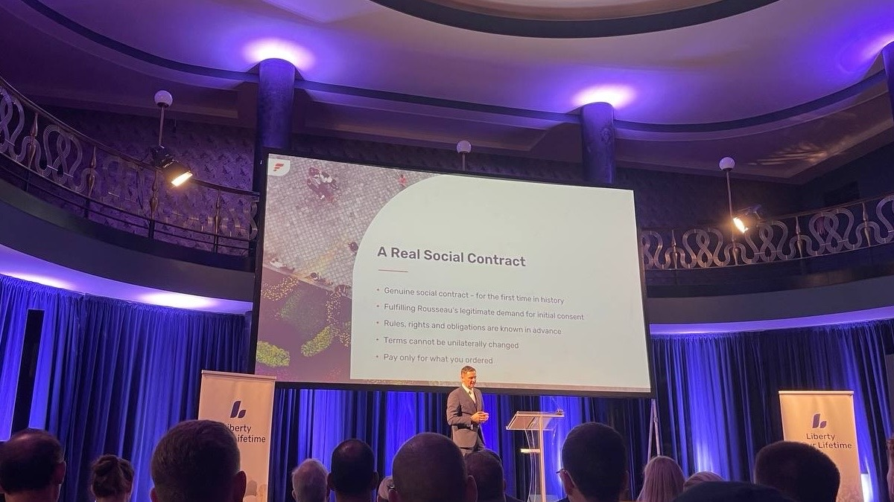
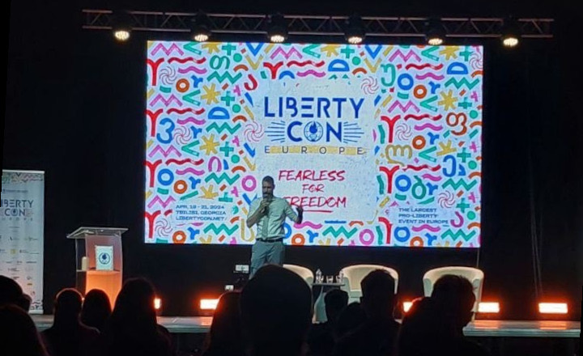
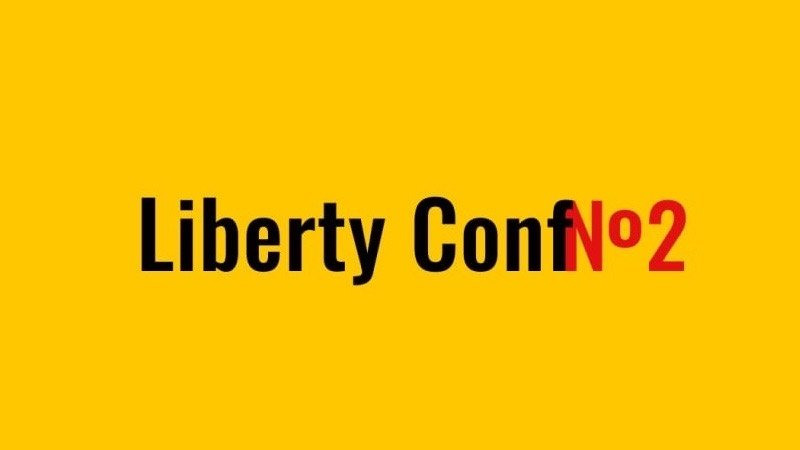

MTL Fest
Поддержка организационных расходов и спикеров.
ПодробнееМы принимаем добровольные пожертвования и поддерживаем связанные с движением Монтелиберо проекты грантами, спонсорством, пожертвованиями и, в документированных случаях, беспроцентными займами.

Поддерживать и масштабировать полезные движению Монтелиберо инициативы за счёт добровольных пожертвований.
В открытом доступе размещены ссылки на решения Совета, недавние случаи поддержки, обзор устава и главный мультисиг-счёт.
Совет сопоставляет предложения с целями фонда. Администрирование остаётся за автором или куратором проекта, а поддержка не гарантируется.
Доноры переводят принимаемые Stellar-активы на отдельный счёт для пожертвований.
Совет сопоставляет предложения с целями фонда и решает, поддерживать ли их и в какой форме.
Поддержка может быть грантом, спонсорством, пожертвованием, беспроцентным займом или иметь другую документированную форму. Ссылки на публичные решения и отчёты добавляются, когда они доступны.
Сейчас фонд принимает EURMTL, USDM и SATSMTL в сети Stellar. Автоматизированные способы ниже работают только с EURMTL и продолжаются во внешних сервисах; этот сайт не проводит и не хранит платёж.
Укажите сумму в Stellar-кошельке, откройте ссылку на 10 EURMTL в Telegram или переведите средства напрямую по адресу ниже. Проверьте данные в кошельке.
Только EURMTL и только целая сумма. После ввода суммы откроется внешний кастодиальный сервис MyMTLWalletBot в Telegram.
Укажите сумму в кошельке. Если кошелёк не открывается, используйте адрес для пожертвований.
Только EURMTL. После ввода суммы откроется внешний сервис переадресации, а затем совместимый Stellar-кошелёк.
Укажите сумму в кошельке. Если кошелёк не открывается, используйте адрес для пожертвований.
Для EURMTL, USDM или SATSMTL используйте указанный ниже Stellar-адрес только после проверки сети, адреса и точного эмитента актива.
Переводы необратимы, возможны комиссии. Сначала всё проверьте, затем удерживайте адрес или нажмите Ctrl+C, чтобы скопировать его.
Проверить счёт для пожертвований в обозревателе блокчейнаЭти активы перечислены в текущем русскоязычном обзоре фонда. Перед переводом откройте источник нужного актива и сверьте его эмитента. Другие формы пожертвования требуют предварительного согласования с Советом.
GACKTN5DAZGWXRWB2WLM6OPBDHAMT6SJNGLJZPQMEZBUR4JUGBX2UK7VВ обзоре устава объясняется, как фонд может использовать пожертвования и как согласовываются целевые пожертвования. Обзор доступен на русском языке.
Действия в разделе пожертвований открывают внешние кошельки, Telegram, сервис переадресации, обозреватель блокчейна или вики, для которых действуют собственные правила конфиденциальности и безопасности.
Поддержка организационных расходов и спикеров.
Подробнее
Развитие карт и открытых данных для города Бар.
Подробнее
Спонсорство издания книги «Основы криптовалют» на черногорском языке.
Подробнее
Перевод на черногорский язык и печать книги Титуса Гебеля «Вольные частные города».
Подробнее
Оплата билетов для поездок на фестиваль Liberty in Our Lifetime в 2023 и 2024 годах.
Подробнее
Беспроцентный заём на печать тиража книги про анкап.
Подробнее
Беспроцентный заём на выпуск мерча Монтелиберо.
Подробнее
Поддержка поездки представителей на LibertyCon в Тбилиси.
Подробнее
Пожертвование на оплату хостинга MonteWiki.
Подробнее
Спонсорство II Liberty Conf — либертарианской конференции в Тбилиси.
Подробнее
Пожертвования на поддержку деятельности.
ПодробнееПредложить проект или идею может любой человек, независимо от участия в Монтелиберо; предложение может касаться и помощи частному лицу.
Предложение должно соответствовать целям фонда. Если вы сомневаетесь, заранее уточните это через бот Совета.
Опишите в боте Совета идею, требуемую поддержку и ответственного за администрирование либо приватно уточните, соответствует ли предложение целям фонда.
Написать в бот СоветаОбсудите то же предложение в публичном Telegram-чате, чтобы получить обратную связь, найти сторонников и доработать идею.
Открыть публичный чатАвтор или куратор отвечает за администрирование проекта. Решение о поддержке и её форме остаётся на усмотрение Совета и не гарантируется.
Приватный бот и публичный чат — внешние сервисы Telegram. Сообщения в публичном чате видны всем; к обоим сервисам применяются правила Telegram.
Фондом управляют крупнейшие активные доноры. В Совет входят не более 10 человек, а главный счёт контролируется мультиподписью, а не одним человеком.
Веса в мультиподписи пересчитываются с учётом недавних пожертвований и делегаций. Для одобрения транзакций и решений нужен квалифицированный порог, что поддерживает коллективное и прозрачное управление.
Посмотрите управляемый Советом главный Stellar-счёт и публичную историю его операций в обозревателе блокчейна.
Открыть мультисиг-счётОткройте русскоязычный обзор устава. Он ссылается на актуальный официальный текст и кратко описывает цели фонда, статус доноров, критерии Совета и правила голосования.
Короткие ответы для людей и ИИ-агентов, которым нужно понять фонд без догадок.
Третий фонд Монтелиберо — фонд сообщества, который за счёт добровольных пожертвований поддерживает полезные инициативы, связанные с движением Монтелиберо, в нескольких документированных формах.
Нет. Пожертвования ТФМ — добровольные взносы. Они не являются инвестициями, ценными бумагами, долями, займами, доходными продуктами или инструментами с гарантированной доходностью.
Два автоматизированных способа работают только с EURMTL и продолжаются во внешних сервисах; сайт не проводит и не хранит платёж. Для прямого перевода можно использовать принимаемые сейчас Stellar-активы. Переводы необратимы и могут включать комиссии, поэтому обязательно сверьте сеть, адрес для пожертвований и точного эмитента актива с актуальным публичным источником.
Любой человек может обратиться к Совету через бот обратной связи или обсудить идею в публичном Telegram-чате. Автор или куратор администрирует проект. Фонд может выбрать одну из документированных форм поддержки, но одобрение не гарантируется.
Сайт ссылается на публичную запись в MonteWiki, недавние решения о поддержке, обзор устава и главный мультисиг-счёт как публичный ориентир управления. Большинство текстовых источников сейчас доступны только на русском языке.
Ниже — подборка недавних публичных решений о поддержке. Ссылки на подтверждения сейчас ведут на русскоязычные публичные источники.